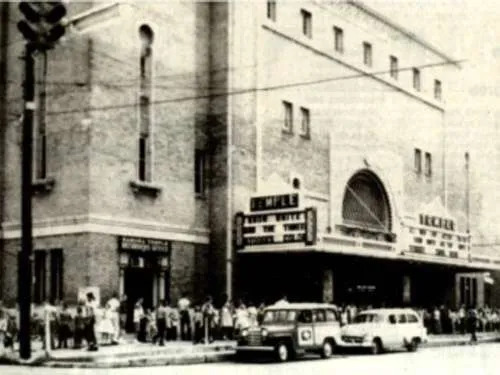
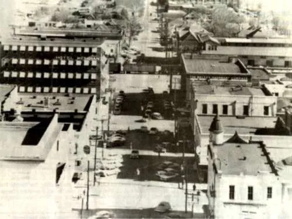

Front Street was a dirt road at the turn of the century, and the first Union Passenger Depot had not been built. This stretch is Front Street between 26th and 27th Avenues. On the left is a white picket fence encircling a private residence, where a pig has wandered into the street. In the middle ground is a steam-powered tractor, standard at the time. In the hazy distance is the site where the first depot would be built.

The long stretch of 22nd Avenue featured three department stores. To the left were the Dumont Department Store and the Marks-Rothenberg Department Store. To the right was Winner and Kline Department Store. Also to the right is Weidmann’s Restaurant, which is still in operation. In the center of the photograph is the Threefoot Brothers Wholesale Company, the present location of The Threefoot Hotel.

This photograph shows Fifth Street looking east. The Rosenbaum Building, now condominiums on the near right. Farther down the block is the Arky Building, now the site of Dumont Plaza. On the left are the Great Southern Hotel and First National Bank. The city was served by electric streetcars.

The photograph shows the damage to Union Station Passenger Depot on Front Street after a tornado leveled much of downtown Meridian in March 1906. Martial law was declared, and the man standing with a shovel to the left was a doughboy soldier sent in to help with the cleanup.

About 1920, Meridian officials were preparing to pave 24th Avenue. This view shows preliminary site grading work near the intersection of Eighth Street, looking south. City Hall can be seen at the end of the street. Across Eighth Street, to the right, is a residence, now the location of Meyer and Rosenbaum Insurance. The man in the photo faces the site where the Temple Theatre would be built in the mid-1920s. Behind him was the Standard Club.

For children, the Temple Theatre was the place to be on Saturday. It was not uncommon for lines of children waiting to see the latest Western to wrap around the block. On this particular Saturday, Snow White and the Seven Dwarfs and The Three Stooges were on the bill. The Temple Theatre is located on the corner of Eighth Street and 24th Avenue.

This 1956 view, taken from the top of the Threefoot Building, shows 22nd Avenue looking south. Trains rolled through the downtown shopping area before the James Melton Bridge was constructed. Behind the train, to the right, is the Gulf, Mobile, and Ohio Railroad Freight Terminal. Plans were underway to renovate the building for use as a railroad museum when it burned in 1995.